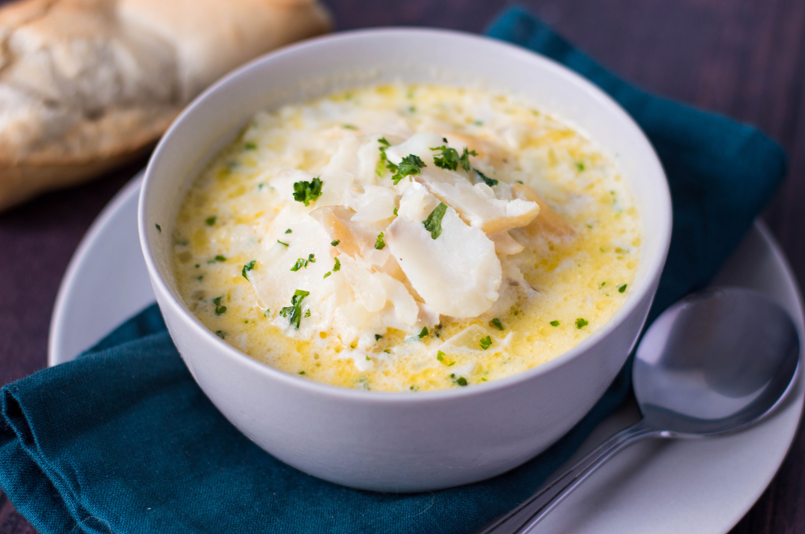

Cullen Skink Scottish Fish Chowder

A lovely, creamy smoked fish recipe
This is a recipe from the Morayshire town of Cullen, using smoked haddock, onions, potatoes and milk for an easy, hearty feed.
A trick I learned from an old ship's cook is to add a little evaporated milk at the end, for sweetness.
Ingredients
- 8oz Smoked Haddock
- 2 Potatoes
- 1 Onion
- 1 Pint Milk
- Evaporated Milk to taste
Method
- Poach the haddock in the milk for 5 minutes.
- Remove haddock and add potatoes and onions.
- Gently cook until potatoes are soft, then re-add the haddock.
- Add evaporated milk to taste.
Home Page